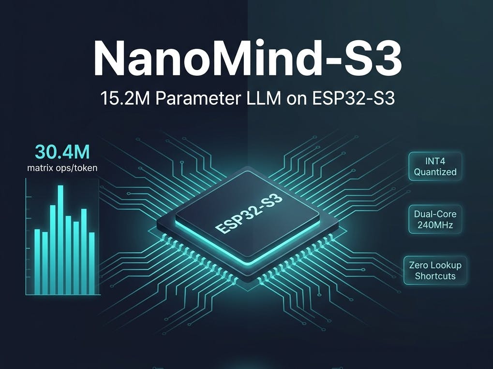

All 15.2 million parameters, computed live, every token — on a $4 chip, at 2.96 tokens a second
15,206,400 parameters. Every single one of them multiplied, fresh, on every generated token — no lookup table standing in for the math, no trick that skips computing most of the model. That's NanoMind-S3, a dense LLaMA-2-architecture transformer running entirely on a single $4 ESP32-S3 microcontroller, generating text at 2.96 tokens/sec with zero network connection of any kind.
Source & credit: the project, firmware, and writeup are the independent work of Salman Farsi (Hackster handle 6farsi, GitHub @imfarsi). The underlying model, stories15M, was trained by Andrej Karpathy on Microsoft's TinyStories dataset as part of his llama2.c project — full credit to Karpathy for the model and dataset work, and to Farsi for the inference engine and firmware. Read the original project page and repo, both genuinely worth your time: Hackster.io project page · github.com/imFARSI/NanoMind-S3 (MIT license).

The trick this project deliberately doesn't take
We covered a different ESP32-S3 language model on this blog two weeks ago: slvDev's esp32-ai, a 28.9M-parameter model that fits into the chip's tight memory budget by keeping 25 million of those parameters in flash as a lookup table (Google's Per-Layer Embeddings technique) and only computing the small remainder on every token. It's a genuinely clever trick, and it's how that project got to nearly double NanoMind-S3's parameter count on similar hardware.
NanoMind-S3 is the opposite engineering choice, on purpose. Its README is explicit: "No lookup table shortcuts, no fake vocabulary dictionaries, and no pruned parameters." Every one of its 15.2 million weights sits in the same LLaMA-2-architecture dense transformer Karpathy originally trained — 6 layers, 288-dimension embeddings, 6 attention heads, a 32,000-token SentencePiece vocabulary, 30.4 million floating-point operations computed per generated token — and every one of them participates in every forward pass. It's a smaller model than slvDev's, computed the harder way, specifically to show what a fully authentic transformer forward pass costs on hardware this small.
Fitting a real forward pass into 512 KB of fast memory
Karpathy's original stories15M.bin ships as 58 MB of FP32 weights — over 100x the ESP32-S3's 512 KB of SRAM, and still more than four times its 16 MB of flash if it stayed uncompressed. Farsi's export_esp32_int4.py quantizes every weight to a signed 4-bit integer (range −8 to +7) with per-row FP32 scale factors, then packs two 4-bit weights into a single byte — one in the low nibble, one in the high nibble. That takes the model from 14.74 MB at INT8 down to 7.49 MB at INT4, small enough to live in the board's 16 MB of SPI flash.
The unpacking itself is hand-tuned Xtensa LX7 assembly-adjacent C: a single arithmetic shift-and-sign-extend per nibble, executing in one CPU clock cycle. Matrix multiplication runs across both of the chip's cores via FreeRTOS semaphores — core 0 computes the top half of each matrix's rows, core 1 the bottom half, for roughly 200% CPU utilization at 240 MHz. The 32,000-entry BPE tokenizer, which would normally cost about 1 MB in heap-allocated fragments, gets flattened into a single contiguous PSRAM string pool instead, cutting its footprint to roughly 150 KB and eliminating heap-fragmentation crashes.
The memory placement is the part that makes the whole thing fit:
Model weights 7.49 MB → 16MB SPI Flash, memory-mapped via esp_partition_mmap
(0 MB of PSRAM — read directly from flash's address space)
KV-cache 3.54 MB → 8MB Octal PSRAM (80MHz bus)
Tokenizer pool 0.15 MB → 8MB Octal PSRAM
────────────────
11.18 MB effectively addressed,
4.04 MB of PSRAM left free after model loadThe model's 7.49 MB doesn't count against the board's 8 MB of PSRAM at all — the ESP32-S3's flash MMU maps it directly into the CPU's address space and reads it in place, the same conceptual move (treat slow storage as directly addressable instead of copying it into fast RAM first) that our own recent piece on memory-mapped GGUF loading covered at phone scale. Only the KV-cache and the tokenizer's working memory need to live in PSRAM proper.
What INT4 actually bought
Farsi benchmarked both quantization levels on identical hardware:
| Quantization | Model size | Memory bus | Speed |
|---|---|---|---|
| INT8 (original) | 14.74 MB | 80MHz Quad SPI Flash | ~1.49 tok/s |
| INT4 (NanoMind-S3) | 7.49 MB | 80MHz Quad SPI Flash MMU | ~2.54–2.96 tok/s |
Source: imFARSI/NanoMind-S3 README, "Speed & Performance Benchmarks."
Halving the model's byte footprint roughly doubled generation speed — a flash-bandwidth-bound system got faster almost in direct proportion to how much less data it had to stream per token, exactly what you'd expect when 80MHz SPI flash reads are the bottleneck rather than compute. A real terminal session from the device, logged in the repo: a 200-token story generated in 67.56 seconds, or 2.96 tok/s, over a plain UART serial connection with no display, no browser, and — the builder is explicit about this — no WiFi radio active at any point.
What it's actually for
stories15M is trained exclusively on TinyStories, a synthetic dataset built specifically so very small models can learn to write grammatically coherent short fiction. NanoMind-S3 writes simple children's stories about characters, animals, and adventures. It does not answer questions, hold a conversation, or follow general instructions — those are limits of what a 15.2M-parameter dense transformer was trained to do in the first place, not something the flash/PSRAM engineering here changes one way or the other. That's the honest scope of the project, and it's also not really the point: nobody is shipping story generation on a $4 microcontroller because it's the best way to get stories. The point is that a real, unmodified transformer architecture — the same attention-and-FFN shape every model in privateSLM's own catalog uses, just three orders of magnitude smaller — runs its actual forward pass, with actual matrix multiplications against actual weights, on a chip that costs less than a cup of coffee.
Why it matters here
privateSLM's smallest catalog model, Llama 3.2 1B Instruct, is about 53x larger than NanoMind-S3's dense core by parameter count. The gap between "smallest model on an iPhone" and "smallest model that will run at all" is enormous, and projects like this one are the only place that gap gets measured empirically instead of theoretically. Every one of these ESP32 builds — DaveBben's original 260K-parameter proof of concept, slvDev's 28.9M-parameter flash-embedding trick, and now Farsi's fully dense 15.2M-parameter design — is independently discovering where the real floor of "the model comes to your data" sits, one microcontroller at a time, with no cloud fallback available even if they wanted one.
Discuss this on the forum → — running a language model on hardware this small yourself? Point us at the repo.